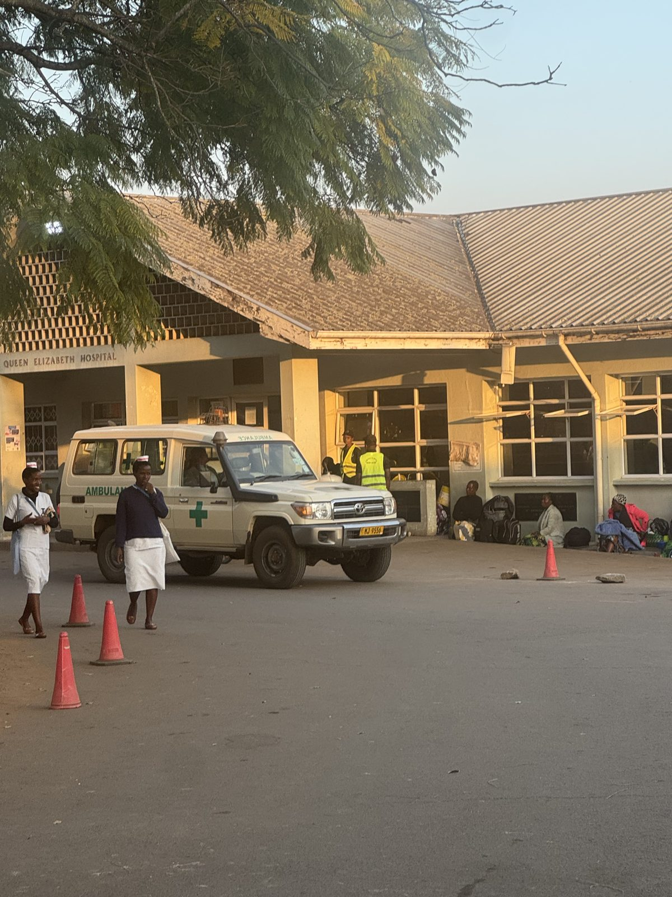

Das größte öffentliche Krankenhaus im Süden Malawis.
Das Queen Elizabeth Central Hospital (QECH) steht in Blantyre, der Wirtschaftsmetropole Malawis. Es wurde 1958 eröffnet und ist heute das größte staatliche Zentralkrankenhaus des Landes. Mit rund 1.350 Betten und einer Vielzahl von Fachabteilungen ist es zugleich die höchste Versorgungsstufe für den gesamten Süden Malawis.
Wenn kleinere Distriktkrankenhäuser, Gesundheitsstationen oder private Einrichtungen nicht weiterhelfen können, werden die Patientinnen und Patienten hierher überwiesen. Damit ist das Haus für Millionen Menschen in der Region die letzte und oft einzige Anlaufstelle – entsprechend voll sind die Stationen, und entsprechend hoch ist der tägliche Andrang.
Gleichzeitig ist das QECH ein Lehrkrankenhaus: Hier werden angehende Ärztinnen und Ärzte ausgebildet, das Haus ist mit der Kamuzu University of Health Sciences verbunden. Und weil es ein öffentliches Krankenhaus ist, wird auch behandelt, wer nicht bezahlen kann. Zugleich arbeitet das Team seit Jahren unter chronischer Unterfinanzierung – es fehlt an Geräten, Verbrauchsmaterial und Medikamenten.

Jeden Tag kommen Dutzende Patientinnen und Patienten in die Notaufnahme. Sie gliedert sich in mehrere Bereiche – Triage, Priority, Trauma, Resuscitation und Short Stay. Dazu kommen ein Raum für kleine chirurgische Eingriffe und ein gynäkologischer Notfallraum. Für Kinder gibt es sogar eine komplett eigene, räumlich getrennte Notaufnahme.
Alles beginnt in der Triage: Dort wird eingeschätzt, wie dringend jemand Hilfe braucht, und dann geht es in die passende Abteilung. In der Priority landen – wie in Deutschland auch – Menschen mit den unterschiedlichsten Erkrankungen. Die Short-Stay-Abteilung ist für alle, die über Nacht überwacht werden müssen, der Trauma-Raum für stabile Patienten nach Unfällen, etwa mit offenen Wunden.
Am meisten Zeit verbringe ich in der Resuscitation. Hierher werden die kritisch Kranken gebracht: mit Hirnblutungen, oft ausgelöst durch unbehandelten Bluthochdruck, nach Autounfällen oder körperlichen Angriffen, mit schwerer Tuberkulose und vielem mehr. Viele sind schon bei der Ankunft nur noch eingetrübt und würden in Deutschland sofort einen Schockraum bekommen. Hier ist dafür kaum Platz – oft liegen fünf oder mehr Schwerkranke zusammen in einem Raum.
Für die beiden Resuscitation-Räume sind zusammen ein Oberarzt, zwei Assistenzärzte und das Pflegepersonal zuständig. Es gibt Sauerstoff und ein paar Medikamente, dazu einen einzigen Monitor für alle. So kommt es vor, dass jemand aufhört zu atmen, ohne dass es sofort auffällt. Sind die Räume voll – was oft passiert – sitzen oder liegen Patienten im Flur. Für die Bildgebung stehen Röntgen und CT bereit – allerdings für die gesamte Klinik. Entsprechend vergeht bis zur fertigen Aufnahme meist viel Zeit.
Schwerstkranke teilen sich oft einen Raum – wenn kein Platz mehr ist, liegen Patienten auf dem Flur.
Ein einziger Monitor für 10 bis 15 Patientinnen und Patienten. Das EKG-Gerät ist veraltet.
lebensbedrohliche Notfälle pro Tag – bei fehlenden Medikamenten und Blutzuckermessgeräten.
Was angeschafft wird, entscheidet das Team vor Ort – es weiß am besten, wo eine Spende am dringendsten gebraucht wird.
Patientenmonitore, damit nicht 10–15 Menschen sich ein einziges Gerät teilen müssen.
Ein modernes EKG-Gerät als Ersatz für die veraltete Technik.
Blutzuckermessgeräte für die Versorgung diabetischer Notfälle.
Dringend benötigte Medikamente für die akute Notfallversorgung.
Jede noch so kleine Spende bringt uns näher an eine sichere Notfallversorgung für die Menschen im Süden Malawis.